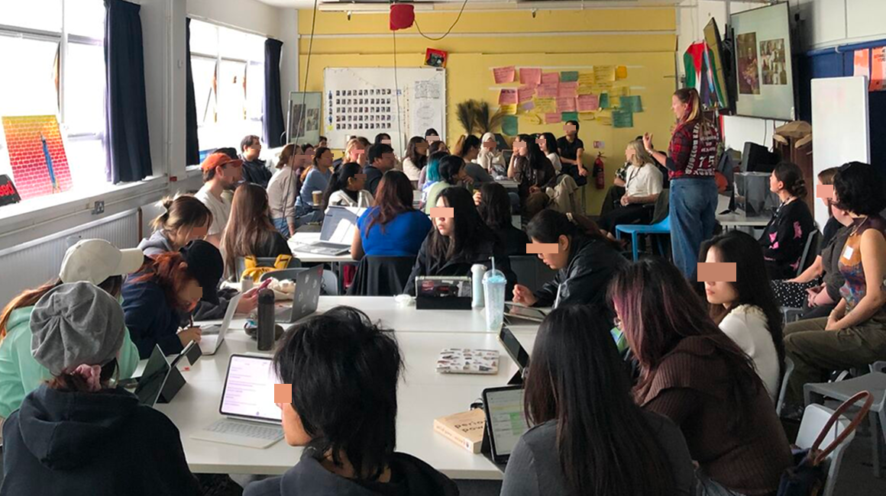

Chiara engaging with students from the MA Design for Social Innovation and Sustainable Futures course at the London College of Communication.
Chiara Portinari is an Associate Lecturer on the MA Design for Social Innovation and Sustainable Futures at London College of Communication (LCC). A Fellow of the Higher Education Academy (FHEA) and former LCC Changemaker, they bring a deep commitment to relational, justice-oriented learning grounded in both academic and professional experience.
They support students through 1-1 sessions, feedback panels, and collaborative conversations, with a focus on care, critical reflection, and creative agency. Their practice is shaped by a desire to help make the university a more organic, responsive space—one that grows through dialogue and shared responsibility.
Drawing from their background in social design, curation, and community work, Chiara shares their lived knowledge to support students as they navigate complex systems and design for meaningful change.